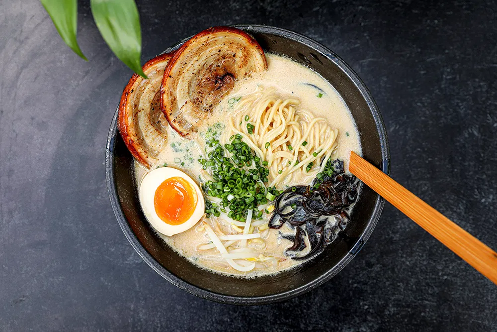

Creamy and Comforting Tonkotsu Ramen

Recounting
Tonkotsu ramen is a popular ramen dish which originated in Kurume,
Fukuoka Prefecture, which is located on the northern shore of
Kyushu island in Japan. It was originally prepared as an affordable
fast food which was easily prepared for laborers at fish markets.
Now, it serves as a comfortable, warming, and hearty meal for all
demographics.
Ingredients
Tonkotsu ramen
- 8 cups tonkotsu pork broth
- 12 ounce good quality dried ramen noodles
- 4 large or extra large eggs
- 2-3 ounze enoki or other mushrooms
- Thinly sliced green onions
Chashu pork belly
- 2 pound belly - rolled and tied
- 1/4 cup soy sauce
- 1/4 cup sake
- 1/2 cup mirin - sweet Japanese wine
- 1/4 cup sugar
- 2-3 cloves garlic - left whole
- 2 green onions - coarsely chopped
Soy bacon tare
- 2 slices bacon - use good quality bacon here
- 1/4 cup soy sauce
- 2 tablespoon mirin
- 2 tablespoon sake
- 4 tablespoon shiro miso
Miso tare
- 1/2 cup shiro miso
- 1/4 cup sake
- 1/4 cup mirin
- Pinch shicimi togarashi - optional
- 1-2 tablespoon kosher salt - depending on how salty you like your ramen.
Instructions
Chashu pork belly
- Combine the soy, sake, mirin, sugar, garlic and green onions in a
ziploc bag large enough to hold the pork belly. Stick a straw
in the bag and seal the ziploc
- Stick a straw in the bag and seal the ziploc bag up against
it (so the straw is the only opening). Suck as much of the air
as you can and seal.
- Vacuum seal and immerse the pork in warm water for 10-11
hours at 170 degrees Fahrenheit. Discard the bag and marinate.
- Let the chashu pork belly cool completely.
- Slice across the chashu pork - (so you get bacon like slices)
- into 8-12 slices about 1/8 to 3/16 inches thick. Reserve the pork because
you will not need all of it for four servings.
Soy bacon tare
- Combine all the ingredients in a small sauce pan. Simmer at
the lowest setting for about an hour. Top up with a bit of chicken
stock if needed.
- Remove the bacon.
Miso tare
- Combine all ingredients in a small sauce pan and simmer at
the lowest setting for about 5 minutes.
Medium boiled eggs
- Bring enough water to cover the eggs to a boil.
If you have a way to prick the eggshell, then do it.
Boil large eggs for 6 minutes and 30 seconds.
- If you are using large eggs, boil them for 7
minutes and 30 seconds.
- You may have to adjust your times slightly depending
on the exact size of your eggs but this should get
you pretty close.
- Submerge the eggs in cold or ice water to chill. This stops
the egg yolks from continuing to set up. Peel. Cut in half
right before you serve your tonkotsu ramen.
Assemble the tonkotsu ramen
- Boil the ramen noodles in plenty of water as directed by the
packaging. If there's no translation on the packaging usually
it's 4 minutes.
- You don't need to salt the water.
- Cook the mushrooms along side the noodles - you just want them softened.
- Gently fry the chashu psork in a non-stick skillet until lightly browned.
- Place 1/4 of whichever tare you are using in the bottom of four bowls.
- Ladle in about 1/2 cup of the tonkotsu broth into each of the bowls and stir to mix.
- Add the noodles.
- Pour in another one and a half cups of the tonkotsu broth per bowl.
- Top with the egg, mushrooms, pork and green onions.